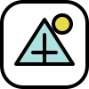

Search = decision making.
Searching is the process of locating a value in a collection. Linear Search checks items one by one; Binary Search repeatedly halves a sorted search range.

ALVIAGitHub ↗02 · SEARCHING LAB
Give the algorithm a target and watch it decide where to look next.
Searching is the process of locating a value in a collection. Linear Search checks items one by one; Binary Search repeatedly halves a sorted search range.
Useful for small or unsorted collections. It needs no preprocessing.
CODE LIBRARY